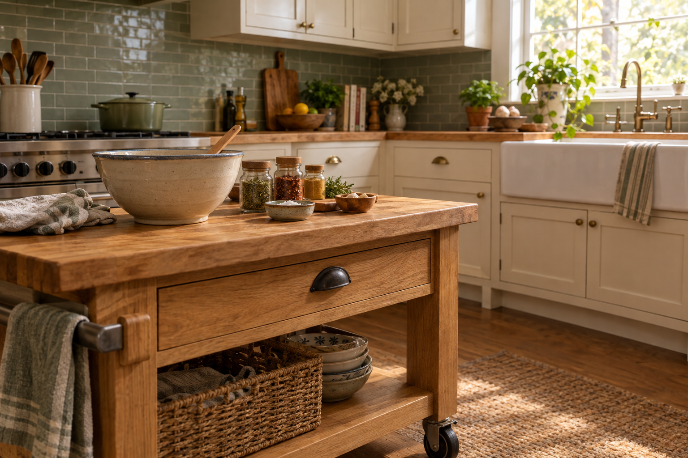

A lower prep surface, in five minutes
Standard counters are 36 inches high. Sitting in a manual chair, most people's comfortable working height is closer to 28–32 inches — which is why prepping food at the counter leaves your shoulders on fire after twenty minutes.
The cheapest fix, and the one every wheelchair-using cook seems to converge on: open a sturdy drawer and lay a large cutting board across it. Now you have a prep surface at seated height, with your knees under it. This is the trick that Katie Rodriguez Banister describes in New Mobility: "pull open a drawer that I can roll under and lay a piece of plywood or a big cutting board across it."
Pick your sturdiest drawer near the sink. Buy or cut a large edge-grain hardwood cutting board — big enough to overhang the drawer front by 2–3 inches. Test with your body weight leaning on the far edge; if the drawer bows, use a piece of ¾" plywood underneath.
Rearranging for reach — everything you actually use, low
ADA reach standards give a useful reference: for a forward reach from a wheelchair, the comfortable range is roughly 15–48 inches above the floor. Above 48 inches, you're straining. Above 54 inches, you're often out of luck without a reacher.
The ruthless version of this rule:
- Daily items — the pan you cook eggs in, your salt, your knife, your two favorite spatulas — go on the lowest shelf or in a lower drawer.
- Weekly items — sheet pans, mixing bowls, the stand mixer — go on the next tier up.
- Occasional items — the roasting pan, the ice-cream maker — move to upper cabinets or off-kitchen storage. Getting them down twice a year with a reacher is fine.
Two upgrades that make lower storage vastly more usable: pull-out shelves inside lower cabinets (so you don't have to reach into a dark box), and a lazy Susan for corners. Both are DIY-installable in an afternoon.

The rolling prep cart — the single best purchase
When counter height can't change, Living Spinal recommends a rolling prep table at wheelchair height. What makes a cart useful for a manual chair user:
- Height 30–32 inches — wheels you under it, or lets you work at chair-arm height.
- Locking casters on all four wheels — nothing worse than a cart that skates away mid-chop.
- Butcher-block or bamboo top — knife-friendly, easy to sanitize.
- A lower shelf — for the bowl of scraps, or the pot you'll put the finished food in.
- A towel bar on the side — for the towel you'll wipe hands on constantly.
The cart is also your transport surface: a pot of pasta water from stove to sink lives on the cart, not on your lap. See Stovetop & oven → Transporting hot things.
Your lap is real estate — protect it and use it
Multiple wheelchair-using cooks describe a bean-bag-bottom lap desk as one of their most-used tools. It creates a stable, flat surface at exactly the height of your body, and — critically — it acts as a thermal barrier between anything hot and your legs. For people with paralysis, spinal cord injury, or nerve damage that limits sensation, this is not optional. From Urban Cripple: "Never place a hot pan on your lap. This is especially important for people with paralysis or nerve damage that makes it harder to sense extreme temperatures."
If you have any reduced sensation in your legs or lap, always assume you cannot reliably feel a burn. Use a lap tray, a thick cutting board, or a folded silicone trivet as a physical barrier — do not rely on feeling heat through fabric.
Reading your floor plan — clearances that actually matter
The 2010 ADA Standards, §804.2.1, call for 40 inches minimum clearance in a pass-through kitchen and 60 inches in a U-shape. If your kitchen is tighter than that (many are), the workable adaptation is staging your work: prep everything on the cart in the doorway or dining room, then move only cooking tasks into the kitchen proper.
Measure the tightest point in your kitchen — usually between the refrigerator and the opposite cabinets. If it's under 36 inches, you'll fight it every day. Two real fixes: remove a cabinet door, or move a small piece of furniture (a trash can, a step stool) out permanently.
- Sturdy drawer identified + large cutting board sized to sit across it
- Everything used daily moved to lower shelves
- Pull-out drawer inserts ordered for lower cabinets
- Rolling prep cart with locking casters
- Lap tray with non-slip bottom (bean-bag or silicone base)
- Widest clear path through the kitchen measured — at least 36"
Continue → Stovetop & oven safety